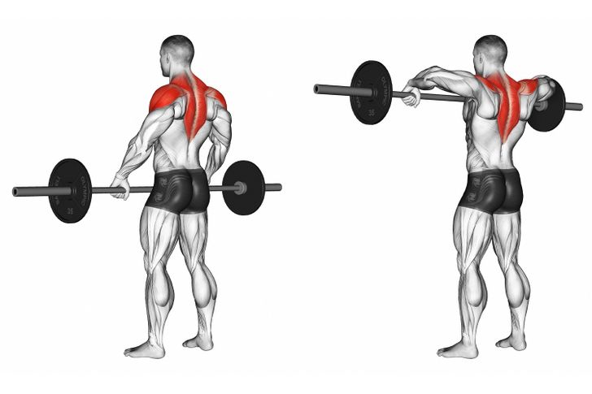

# Always perform warm-up!!
|
1-Arnold Press.#The Arnold press is an effective exercise that engages all 3 sections of your shoulder. It’ll contribute to muscle gain and help stabilize the shoulder joint.#3 Sets x 10 Reps |
2-The Upright Row.#The upright row targets the middle and front part of the deltoids and the trapezius muscle, so it helps make the shoulders look more round and wide.#3 Sets x 10 Reps |
3-Lateral Raise.#The lateral raise is a great exercise to hit the lateral deltoids, which is the part of the shoulder that makes them look broader.#3 Sets x 10 Reps |
4-Barbell Front Raise.#The barbell front raise primarily focuses on the front part of the shoulder, but it also engages the upper chest muscles and the sides of the shoulder.#3 Sets x 10 Reps |
5-Bent Over Reverse Flyes.#The bent over reverse fly targets the back part of your shoulders and helps improve your posture and the performance of other shoulder exercises.#3 Sets x 10 Reps |
6-Standing Rope Face Pull.#The standing rope face pull works your rear delts without putting excessive pressure on your joints.#3 Sets x 10 Reps |
7-Shrugs.#Shrugs work the trapezius muscle that will make your spine and shoulders look wider and more muscular.#3 Sets x 10 Reps |
© "Spaghetti Coders" Founders and developers 2020